Moda, estilo e historia
🔹¿Se puede usar ropa de punto en verano? 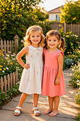 El verano ha llegado — la temporada de ligereza, sol y colores vibrantes. Es momento de renovar el armario y abastecerse de modelos que ofrezcan comodidad incluso en los días más calurosos. La ropa de verano no solo debe ser elegante, sino también transpirable, práctica y versátil. Después de todo, el verano no es solo vacaciones en la playa, sino también paseos por la ciudad, encuentros con amigos, comidas de negocios en terrazas al aire libre y veladas románticas. En esta temporada, los tejidos naturales, las siluetas relajadas y los acentos llamativos son especialmente relevantes.
Exploremos las categorías clave del armario de verano con ejemplos de modelos actuales de NET‑A‑PORTER. |
🔹 Categoría KNITWEAR 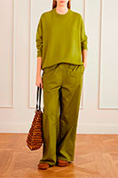 La ropa de punto no es solo para el invierno. Las prendas de punto ligeras de algodón, lino o cachemir fino son ideales para las frescas noches de verano, espacios con aire acondicionado u oficinas. Son transpirables, no sobrecalientan y tienen un aspecto elegante y acogedor. La colección de verano incluye tanto modelos básicos como diseños de autor con texturas inusuales y colores vivos. |
• Cardigan 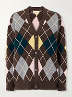 Cardigan: chaqueta de punto abotonada, holgada o entallada, a menudo sin cuello. Los modelos de verano se confeccionan en algodón fino, lino o viscosa — no sobrecargan el look y protegen del frescor nocturno. Los cardigans oversize quedan genial con shorts y vaqueros, mientras que los entallados combinan perfectamente con faldas y vestidos. |
• Cashmere 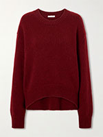 Cachemir: prendas de la lana más suave de la cabra de cachemir. Contrariamente a los estereotipos, el cachemir fino es ideal para el verano — es transpirable, no irrita la piel y regula perfectamente la temperatura. Un jersey o cardigan de cachemir ligero es el compañero perfecto para las noches frescas o los espacios con aire acondicionado. |
• Polo 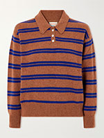 Polo: el modelo clásico de manga corta con cuello vuelto y botones. Originalmente deportivo, hoy se ha consolidado en el armario cotidiano. Los polos de verano en piqué de algodón o lino son una excelente opción para oficinas sin código de vestimenta estricto, paseos y reuniones. |
• Sweater 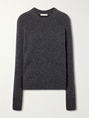 Suéter / Jersey: prenda de punto con mangas largas o cortas, generalmente sin cierre. Los modelos de verano se tejen en algodón, seda o lana fina y tienen un corte holgado. Un suéter oversize se puede usar con shorts o meterlo en faldas y pantalones para un look relajado. |
• Turtleneck 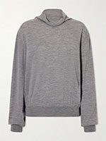 Cuello alto: modelo con cuello alto ajustado que cubre el cuello. Los cuellos altos finos de verano en algodón o seda son una elección inesperada pero muy elegante. Protegen del sol, quedan bien debajo de vestidos y combinaciones, creando looks en capas. |
• Vest 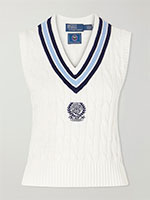 Chaleco: modelo sin mangas, con escote profundo o cerrado. Los chalecos de verano en punto ligero o modelos de ganchillo son una gran opción para los días más frescos. Se pueden usar sobre una camiseta o blusa, añadiendo textura y volumen al conjunto. |
🔹 ¿Necesita shorts de verano cómodos? Categoría SHORTS
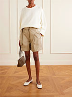
|
🔹 Faldas de verano para amantes de la moda. Categoría SKIRTS
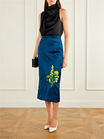 |
• Knee Length Skirts 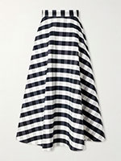 Faldas hasta la rodilla: un clásico elegante que funciona tanto en la oficina como en un paseo. Combinan perfectamente con blusas ligeras, tops y camisas. Elija modelos de algodón o tejidos mixtos con elastano para un ajuste cómodo. La longitud hasta la rodilla alarga visualmente la silueta y favorece a casi cualquier figura. |
• Maxi Skirts 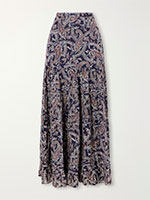 Faldas maxi: la gran tendencia del verano — modelos fluidos y relajados. Son ideales en el calor, ya que no se adhieren a la piel y permiten que circule el aire. Perfectas para salidas a la playa, paseos y citas románticas. Combínelas con tops sencillos, camisetas y sandalias ligeras. |
• Midi Skirts 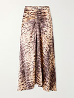 Faldas midi: desde la mitad de la pantorrilla hasta la rodilla — la longitud más versátil. Funcionan para oficina, looks informales y de noche. Según el corte (recta, evasé, plisada), las faldas midi pueden ser estructuradas o románticas. Los modelos de lino y algodón con estampados llamativos son especialmente populares. |
• Mini Skirts 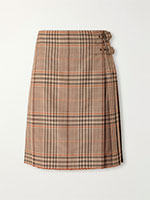 Faldas mini: una elección atrevida y moderna para mujeres seguras. En verano, mini significa libertad de movimiento y máxima frescura. Para el día a día, elija modelos de algodón resistente o denim; para la noche, opte por seda o viscosa. Las faldas mini quedan genial con tops sencillos y camisas oversize sueltas. |
🔹 Pintalabios a juego con el coche: moda sobre ruedas 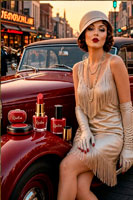 Los años 1920 — la era del jazz, los automóviles y la libertad. Revlon lanza esmaltes de uñas y pintalabios en paletas de colores coordinados. Fue un gran avance: la mujer podía brillar de pies a cabeza. Pero los especialistas en marketing fueron más allá: en la publicidad se animaba a las mujeres a combinar el color de sus labios no solo con el bolso o el sombrero, sino... con el coche. "¿Conduces un roadster rojo? Entonces tus labios deben ser ardientes. ¿Tienes un descapotable azul? ¡Elige ciruela!" — proclamaban los carteles. Y las mujeres se dejaban llevar. Imagine: por la mañana, una mujer se aplica pintalabios del color de su coche, se sienta al volante y se siente una con el motor. Suena descabellado, pero así nació la cultura del total look. Hoy parece un vintage encantador, pero entonces fue la tendencia más atrevida de la década. |
🔹 Botones para sirvientes y señores 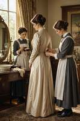 ¿Ha notado que los botones de las camisas de hombre están a la derecha, mientras que los de mujer están a la izquierda? No es un error de los sastres, sino una tradición centenaria. Es simple: en las familias adineradas, las damas eran vestidas por las criadas. Les resultaba más fácil abrochar los botones con la mano izquierda cuando estaban frente a su señora. Los hombres, por su parte, se vestían solos — por eso los botones están a la derecha, para la mano derecha. La ironía es que seguimos esta regla, aunque las mujeres llevan más de cien años siendo perfectamente capaces de abrocharse los botones solas. Pero la tradición es más fuerte que la lógica. Cuando se esfuerce con el botón izquierdo de su blusa favorita, solo diga: "No es incómodo, es contexto histórico." |
🔹 El impuesto a la barba: cuando el vello facial se convirtió en un artículo de lujo
Imagine: se despierta por la mañana, se mira al espejo y piensa — ¿afeitarse o no afeitarse? Y de repente se da cuenta de que el tamaño de su cartera depende de esa decisión. Así se sentían los súbditos de Pedro I en Rusia y Enrique VIII en Inglaterra. Estos dos monarcas, sin saberlo, se convirtieron en los padrinos del impuesto más extraño de la historia: el impuesto a la barba. En Rusia, Pedro el Grande, obsesionado con la moda europea, prohibió las barbas para todos excepto el clero y los campesinos. ¿Quiere llevar barba? ¡Pague! La cantidad dependía del estatus: los comerciantes ricos pagaban una fortuna, los pobres unos céntimos. Y para que nadie pudiera evadirlo, en las entradas de las ciudades se exhibían "marcas de barba" — chapas metálicas que confirmaban el pago del impuesto. Sin una de estas marcas, podían multarle en plena calle o incluso arrancarle la barba (es broma, pero ciertamente ponía los nervios de punta). El rey Enrique VIII de Inglaterra, amante de esposas y lujos, también decidió gravar a los barbudos. Su motivación era más simple: llenar el tesoro, porque las guerras y los banquetes eran caros. La ironía es que el propio Enrique llevaba barba. Es decir, cobraba a sus súbditos por el derecho a parecerse a él. La barba se convirtió en un marcador: o eres rico y pagas, o eres pobre y vas tan liso como una bola de billar. Hoy reímos, pero entonces era una señal social seria — literalmente "afeitado significa pobre". |
| 🔹 La falda coja: un paso hacia urgencias
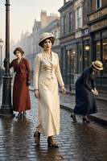 Los años 1910. Las mujeres, inspiradas por el progreso y la libertad, decidieron de repente que caminar con paso normal era vulgar. Y apareció la "falda coja" (hobble skirt). Se estrechaba tanto en los tobillos que un paso normal era físicamente imposible. Las damas se movían a pasitos cortos y menudos, como gallinas sobre hielo. Era un espectáculo a la vez tierno y trágico. Ahora imagine: una dama con esa falda baja del tranvía, tropieza con el bordillo y cae como una estatua. Las manos ocupadas con el bolso y la sombrilla, las piernas atadas por la tela, sin dónde apoyarse. Lesiones de tobillo, dislocaciones, moratones — se convirtió en una auténtica epidemia. Los médicos dieron la alarma y las amantes de la moda pagaron por la belleza no solo con dinero, sino también con escayola. Lo más gracioso es que esta falda fue diseñada por Paul Poiret, que se inspiró en una cuerda atada a las piernas de una aviadora. La idea era buena, pero la ejecución cruel. Las mujeres usaron la hobble skirt poco tiempo — cruzar la calle era demasiado peligroso. Pero pasó a la historia como símbolo de cómo la moda puede literalmente robarnos la capacidad de dar un paso adelante. |
| 🔹 Macarrones — no un plato, sino un estilo de vida
Cuando oye la palabra "macarrones", piensa en un delicioso plato italiano, ¿verdad? Pero en la Inglaterra del siglo XVIII, un macarroni era el tipo más moderno del barrio. Una subcultura de jóvenes dandis que vestían ropa italiana, enormes pelucas empolvadas, sombreritos diminutos (que apenas se sujetaban sobre esas pelucas) y calzones ajustados hasta la rodilla. Hablaban con acento italiano, comían macarrones (¡comida, al fin y al cabo!) y se comportaban con la máxima excentricidad. Estos tipos eran una parodia de sí mismos — se les ridiculizaba en periódicos y caricaturas. Pero no se rendían. Inspiraron la famosa línea de la canción estadounidense "Yankee Doodle": "se puso una pluma en el sombrero y lo llamó macarroni". Es decir, un estadounidense que visitaba Londres pensaba que con una pluma en el sombrero ya era un moderno europeo. En realidad, los macarronis eran mucho más ridículos: bucles hasta los hombros, pantorrillas acolchadas (¡sí, se rellenaban los calzones con acolchado para dar volumen!) y se movían con increíble altivez. Así que la próxima vez que coma pasta, recuerde: en algún lugar del siglo XVIII, los macarronis con pelucas y plumas andaban pavoneándose. |
| 🔹 Lunares de piel de ratón: lunares con historia
El siglo XVIII — la era del encaje, los corsés y... los granos. Nadie estaba a salvo de la viruela, y las cicatrices y llagas en la cara se consideraban un terrible faux pas. ¿Qué hacer? Entran en escena los lunares — pequeñas marcas artificiales que se pegaban en la cara. Al principio se recortaban de terciopelo o tafetán, pero luego la cosa se volvió surrealista: los lunares empezaron a hacerse con... piel de ratón. Sí, gris, suave y sorprendentemente realista. Cada lunar tenía su propio significado. Un círculo cerca de los labios — coquetería; un triángulo en la mejilla — disposición para la intriga; una estrella en la sien — pertenencia a una sociedad secreta (o simplemente ganas de impresionar). Las damas se pegaban cinco o seis, creando verdaderos mapas en sus rostros. Pero imagine: verano, calor, la cola de resina empieza a derretirse, el lunar se desliza hacia la nariz... Esto no era chic, ¡era supervivencia! Y cuando un caballero besaba una mano y de repente sentía el sabor a piel de ratón — eso sí que era romance verdadero. La ironía es que muchas blogueras de belleza modernas no saben que sus amados correctores y parches son solo la versión contemporánea de los lunares de piel de ratón. |
| 🔹 Chopines: el barro vencido, pero caminar — no tanto
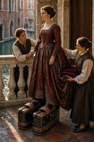 Los venecianos siempre han sido prácticos. En los siglos XV–XVII, las calles estaban llenas de barro, y las damas, para no manchar sus lujosos dobladillos, idearon altas plataformas de madera — los chopines. Al principio eran prácticos "zuecos" de 10-15 cm. Pero luego empezó la competición: ¡quién las llevaba más altas! Y las plataformas crecieron hasta los 50 cm — más o menos la altura de un niño de tres años. Ahora ponerse chopines no era solo calzarse, sino una hazaña alpinista. El pie se atascaba en el empeine, la pierna no se doblaba, y el centro de gravedad se desplazaba tanto que bastaba una ráfaga de viento para que la dama cayera como un bolo. Por eso, dos criadas a cada lado eran un accesorio imprescindible. Sostenían a su señora mientras esta se movía majestuosamente (léase: a duras penas) por el palacio. Al caer, podía romperse una pierna, la plataforma y pisar a una criada. ¿Por qué tales sacrificios? ¡Para mantener el dobladillo limpio! Al final: el vestido impecable, pero la dueña como en zancos. El barro vencido, pero el paseo se convirtió en una aventura de riesgo. |
| 🔹 La bragueta como caja fuerte universal
Siglo XVI. Los hombres llevan medias ajustadas, y de repente aparece una solapa especial en la parte delantera — la bragueta (codpiece). Inicialmente tenía un propósito puramente utilitario: acceso rápido. Pero luego la bragueta comenzó a... crecer. Y crecer. Se convirtió en toda una estructura de tela rellena de algodón, adornada con encaje e incluso botones. Y lo curioso: los hombres descubrieron rápidamente que este "bolsillo" era un excelente lugar para guardar cosas. Dentro de la bragueta guardaban monedas, pañuelos, llaves, y a veces incluso un trozo de queso o una manzana (broma, pero perfectamente posible). Imagine a un cortesano importante en un baile sacando un pañuelo de sus pantalones para secarse el sudor, y cayéndole unas monedas. O bailando con las monedas tintineando. Cuanto más rico era el hombre, más elaborada era su bragueta — era un símbolo de estatus, como un reloj de 100.000 euros hoy. Y cuando las chaquetas cortas se pusieron de moda, la bragueta asomaba por debajo como un tercer ojo. La moda era, bueno, muy... expresiva. |
🔹Pelucas con trampas para ratones: peinados con compañíaFinales del siglo XVIII. Las pelucas femeninas ya no eran solo peinados, sino estructuras arquitectónicas de hasta un metro de altura. Se construían para durar semanas o incluso un mes. La construcción incluía un armazón de alambre, estopa, crin de caballo, harina para el polvo y pomada de grasa animal. Y en este ambiente cálido y nutritivo se criaba... ¡cualquier cosa! Piojos, por supuesto — se sentían como en un resort. Pero el horror principal: los ratones. Los roedores, atraídos por el olor a grasa, se instalaban en la peluca, roían el cabello y construían nidos. ¿Qué hacían las damas? Dormían con jaulas metálicas en la cabeza, parecidas a jaulas de pájaros. Las colgaban del techo para que los ratones no corrieran por sus caras. Imagine: noche, una aristócrata en una cama lujosa, y sobre ella, colgada de una cuerda, una jaula que contiene su peluca durmiendo. ¿Gracioso? Sí. ¿Escalofriante? Totalmente. Los maridos temían acercarse a sus esposas porque a veces asomaba una cola de ratón del peinado. En los bailes, era costumbre golpear la peluca con el abanico — para comprobar si alguien se escondía dentro. Eso sí que era estilo extremo. |
| 🔹 Vestidos de sacos de harina: la moda como supervivencia
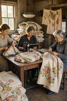 La Gran Depresión en Estados Unidos — una época en la que incluso la harina era un lujo. Pero las mujeres estadounidenses no se rindieron: comenzaron a hacer vestidos y camisas con sacos de algodón en los que se vendía harina y pienso para animales. La tela era áspera, pero gratuita. ¿Y qué hicieron los fabricantes? Lo notaron y empezaron a producir sacos con estampados florales vivos, bordes de encaje e incluso instrucciones: "Corte a lo largo de esta línea para hacer un vestido". No era solo marketing — era solidaridad. Las muchachas organizaban auténticos desfiles de moda en los pueblos, donde todas iban con atuendos de "molino de harina". La ironía es que estos vestidos se convirtieron en símbolos de solidaridad y resiliencia. Cuando una vecina decía: "¡Oh, qué vestido tan bonito!", la respuesta era: "Gracias, es un nuevo lote de harina — muy exitoso". Hoy, los coleccionistas de vintage pagan auténticas fortunas por estas prendas, sin saber que una vez se usaron en la cocina llenas de harina. La moda nacida de la pobreza se convirtió en moda nacida de la nostalgia. |
🔹 Deporte de verano: equipo para actividades al aire libre y entrenamientos 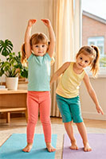 El verano ha llegado — y con él las esperadas salidas a la naturaleza, el deporte al aire libre y la actividad física. En la temporada cálida, es especialmente importante elegir la ropa deportiva adecuada, que no solo proporcione comodidad y libertad de movimiento, sino que también tenga un aspecto elegante. Los tejidos técnicos, los cortes pensados y la funcionalidad son los criterios principales a la hora de elegir el equipo deportivo de verano. Correr en el parque, yoga sobre el césped, tenis en la pista o simplemente un paseo por la ciudad — para cada tipo de actividad hay un atuendo ideal.
Criterios adicionales para elegir ropa deportiva: • Tejidos que absorben la humedad: alejan el sudor de la piel, manteniéndola seca durante el entrenamiento.
Exploremos las categorías clave de ropa deportiva con ejemplos de modelos actuales de NET‑A‑PORTER. Para simplificar la búsqueda, el catálogo de NET‑A‑PORTER está claramente segmentado por tipos de ropa deportiva. Sumérjamonos en esta variedad.
|
🔹 Categoría DRESSES 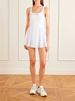 Los vestidos deportivos son la elección ideal para un verano activo. Combinan la comodidad de la ropa de entrenamiento con la estética de la ropa de diario. Confeccionados con tejidos transpirables que absorben la humedad, mantienen la comodidad incluso en los días más calurosos. Estos vestidos son perfectos para paseos, picnics y entrenamientos ligeros.
• Tennis Vestidos de tenis: modelos clásicos para la pista. Se caracterizan por un corte holgado, a menudo con top y shorts integrados. Confeccionados con tejidos ligeros y transpirables con protección UV. Son ideales para el calor y ofrecen la máxima libertad de movimiento.
• Yoga and Dance Para yoga y danza: modelos más entallados en materiales elásticos que no restringen el movimiento. Ideales para estiramientos y actividades intensas. Suelen tener inserciones de malla para ventilación adicional y costuras planas que evitan rozaduras.
|
🔹SPORT KNITWEAR 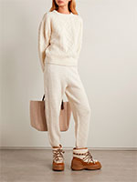 Ropa de punto deportiva: Prendas de punto o jersey ligeras para el ocio activo. Transpiran, se estiran bien y tienen un aspecto elegante. Ideales para las noches frescas después del entrenamiento o como capa adicional antes del calentamiento.
• Post Workout Para la recuperación: modelos ligeros y holgados para usar después del entrenamiento. Proporcionan una relajación muscular confortable y una buena circulación del aire. Pueden tener cinturillas elásticas suaves y diseño minimalista.
• Ski Para esquiar: modelos aislados y resistentes al viento para climas fríos. Aunque no es una historia estival, pueden ser útiles para viajes a la montaña o para patinar sobre hielo. Fabricados con regulación de temperatura y protección contra el viento.
|
🔹 SPORT LEGGINGS 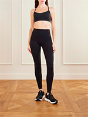 Los leggings son la base de cualquier armario deportivo. Sostienen los músculos, proporcionan compresión y permiten que la piel respire. Dependiendo del modelo, son adecuados para diferentes actividades — desde entrenamientos intensos hasta la recuperación suave.
• Gym and Cross-Train Para gimnasio y entrenamiento cruzado: leggings versátiles para entrenamientos intensos con alta compresión. Confeccionados con materiales densos y elásticos que mantienen la forma y proporcionan soporte muscular. Suelen tener propiedades de absorción de humedad.
• Post Workout Para la recuperación: modelos ligeros y holgados para usar después del entrenamiento. Proporcionan una relajación muscular confortable y una buena circulación del aire. Pueden tener cinturillas elásticas suaves y diseño minimalista.
• Run Para correr: leggings con mayor elasticidad y ligereza. Suelen incluir elementos reflectantes, bolsillos para el teléfono y objetos pequeños. Absorben bien la humedad y evitan el sobrecalentamiento al correr con calor.
• Ski Para esquiar: modelos aislados y resistentes al viento para climas fríos. Aunque no es una historia estival, pueden ser útiles para viajes a la montaña o para patinar sobre hielo. Fabricados con regulación de temperatura y protección contra el viento.
• Yoga and Dance Para yoga y danza: leggings ligeros y suaves con alta elasticidad. Proporcionan libertad de movimiento durante los estiramientos y no restringen el cuerpo. Suelen tener costuras planas y una cinturilla elástica ancha para máxima comodidad.
|
🔹 SPORT ONE-PIECE 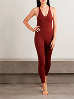 Monos deportivos y bañadores: prendas de una sola pieza ideales para el ocio activo y los deportes acuáticos. No restringen el movimiento, proporcionan comodidad y protección solar. Estos monos se pueden usar solos o combinados con shorts.
• Run Para correr: monos ligeros que reemplazan tanto la camiseta como los leggings. Suelen tener la parte inferior holgada y la superior entallada. Confeccionados con materiales ligeros y transpirables con protección UV.
• Ski Para esquiar: trajes de esquí de una pieza con aislamiento y protección contra el viento. Aunque son equipamiento de invierno, pueden ser necesarios para viajes a la montaña incluso en verano.
• Yoga and Dance Para yoga y danza: monos elásticos que se ajustan perfectamente al cuerpo. Ideales para estiramientos, no restringen el movimiento y tienen un aspecto elegante.
|
🔹 SPORT PANTS 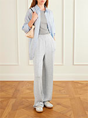 Los pantalones deportivos son una prenda versátil que funciona tanto para entrenar como para el día a día. Ofrecen comodidad, libertad de movimiento y combinan perfectamente con cualquier ropa deportiva o de diario.
• Gym and Cross-Train Para gimnasio y entrenamiento cruzado: pantalones versátiles para entrenamientos intensos con alta compresión. Confeccionados con materiales densos y elásticos que mantienen la forma y proporcionan soporte muscular. Suelen tener propiedades de absorción de humedad.
Para la recuperación: modelos ligeros y holgados para usar después del entrenamiento. Proporcionan una relajación muscular confortable y una buena circulación del aire. Pueden tener cinturillas elásticas suaves y diseño minimalista.
Para correr: pantalones con mayor elasticidad y ligereza. Suelen incluir elementos reflectantes, bolsillos para el teléfono y objetos pequeños. Absorben bien la humedad y evitan el sobrecalentamiento al correr con calor.
Para esquiar: modelos aislados y resistentes al viento para climas fríos. Aunque no es una historia estival, pueden ser útiles para viajes a la montaña o para patinar sobre hielo. Fabricados con regulación de temperatura y protección contra el viento.
Para yoga y danza: pantalones ligeros y suaves con alta elasticidad. Proporcionan libertad de movimiento durante los estiramientos y no restringen el cuerpo. Suelen tener costuras planas y una cinturilla elástica ancha para máxima comodidad.
|
🔹 SPORT SHORTS 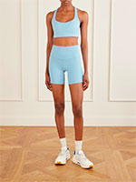 Los shorts deportivos son imprescindibles para el deporte de verano. Ofrecen la máxima libertad de movimiento y ventilación. Dependiendo del modelo, son adecuados para diferentes tipos de entrenamiento — ya sea correr, gimnasio o tenis.
• Gym and Cross-Train Para gimnasio y entrenamiento cruzado: shorts versátiles para entrenamientos intensos. Confeccionados con materiales duraderos y transpirables que soportan el desgaste activo. Suelen tener una capa interior integrada tipo malla para mayor comodidad.
• Post Workout Para la recuperación: shorts ligeros y holgados para usar después del entrenamiento. Suaves, transpirables y no restringen el movimiento. Ideales para la relajación y el descanso.
• Run Para correr: shorts ligeros con alta maniobrabilidad. Suelen tener mallas integradas, bolsillos y elementos reflectantes. Proporcionan comodidad al correr con calor.
• Tennis Shorts de tenis: modelos clásicos para la pista. Se caracterizan por un corte holgado y una longitud justo por encima de la rodilla. Confeccionados con materiales ligeros que no restringen el movimiento y ofrecen protección solar.
• Yoga and Dance Para yoga y danza: shorts elásticos perfectos para yoga y danza. No restringen el movimiento, se adaptan suavemente al cuerpo y se estiran muy bien. Suelen tener una cinturilla elástica ancha para mayor comodidad.
|
🔹SPORT SKIRTS 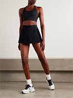 Las faldas deportivas son una tendencia de los últimos años. Combinan la estética de una falda clásica con la funcionalidad de la ropa deportiva. Perfectas para tenis, correr o simplemente un paseo activo.
• Post Workout Para la recuperación: faldas ligeras y holgadas para usar después del entrenamiento. Transpirables, suaves y no restringen el movimiento. Quedan genial con una camiseta o leggings.
• Tennis Faldas de tenis: modelos clásicos para la pista. Suelen tener shorts-mallas integrados y una cinturilla para pelotas de tenis. Confeccionadas con tejidos ligeros y fluidos que no interfieren con el movimiento.
|
🔹 SPORT TOPS 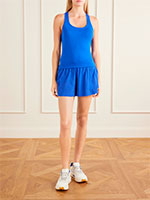 Los tops deportivos son la base de cualquier look activo. Ofrecen soporte, ventilación y comodidad. Dependiendo del modelo, son adecuados para diferentes actividades — desde correr hasta yoga.
• Gym and Cross-Train Para gimnasio y entrenamiento cruzado: tops versátiles para entrenamientos intensos con alta compresión. Confeccionados con materiales densos y elásticos que mantienen la forma y proporcionan soporte muscular. Suelen tener propiedades de absorción de humedad.
Para la recuperación: modelos ligeros y holgados para usar después del entrenamiento. Proporcionan una relajación muscular confortable y una buena circulación del aire. Pueden tener cinturillas elásticas suaves y diseño minimalista.
Para correr: tops con mayor elasticidad y ligereza. Suelen incluir elementos reflectantes, bolsillos para el teléfono y objetos pequeños. Absorben bien la humedad y evitan el sobrecalentamiento al correr con calor.
Para esquiar: modelos aislados y resistentes al viento para climas fríos. Aunque no es una historia estival, pueden ser útiles para viajes a la montaña o para patinar sobre hielo. Fabricados con regulación de temperatura y protección contra el viento.
Para yoga y danza: tops ligeros y suaves con alta elasticidad. Proporcionan libertad de movimiento durante los estiramientos y no restringen el cuerpo. Suelen tener costuras planas y una cinturilla elástica ancha para máxima comodidad.
|
Change page language: |